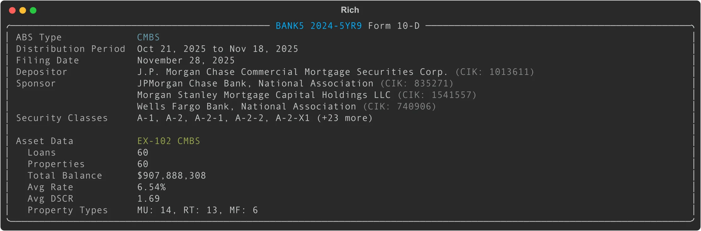

Form 10-D: ABS Distribution Reports (CMBS)
Overview
Form 10-D is an Asset-Backed Issuer Distribution Report required under Sections 13 and 15(d) of the Securities Exchange Act of 1934. These filings disclose distribution and pool performance data for publicly offered asset-backed securities (ABS).
ABS come in many forms — credit card receivables, auto loans, student loans, residential mortgages (RMBS), commercial mortgages (CMBS), and utility securitizations. However, edgartools currently supports only CMBS (Commercial Mortgage-Backed Securities) filings that include structured XML asset data in the EX-102 attachment.
For CMBS 10-D filings, edgartools extracts: - Loan-level data: 49 fields covering origination, balance, rate, maturity, servicer, and payment status - Property-level data: 46 fields covering location, type, valuation, occupancy, financials, and debt service coverage ratios - Summary statistics: Pool metrics like total balance, average DSCR, occupancy, and property type distribution
What About Non-CMBS 10-D Filings?
For non-CMBS 10-D filings (auto loans, credit cards, student loans, etc.), filing.obj() returns None because these filings do not include standardized XML asset data. Asset data for non-CMBS filings is typically reported in separate ABS-EE filings or in HTML tables with highly variable formats.
Access Pattern
from edgar import Filing
# Get a Form 10-D filing
filing = Filing(form="10-D", ...)
# Parse into TenD object
ten_d = filing.obj() # Returns TenD for CMBS, None for non-CMBS
# Check if CMBS data is available
if ten_d and ten_d.has_asset_data:
loans = ten_d.loans # pandas DataFrame
properties = ten_d.properties # pandas DataFrame
summary = ten_d.asset_data.summary() # CMBSSummary
Display
When you call filing.obj() on a CMBS Form 10-D filing, edgartools parses the filing and displays a rich panel with issuer information, distribution period, and asset data summary:

The panel shows: - Issuing entity (ABS trust name and CIK) - ABS type (detected as CMBS, AUTO, CREDIT_CARD, etc.) - Distribution period dates - Filing date - Depositor and sponsor entities - Security classes registered - Asset data summary (loans, properties, total balance, average rates/DSCR/occupancy, property types)
Core Data Structure
TenD (Top-Level Object)
| Property | Type | Description |
|---|---|---|
filing |
Filing |
The underlying Filing object |
form |
str |
Form type (10-D or 10-D/A for amendments) |
company |
str |
Company name from the filing |
filing_date |
date |
Filing date |
accession_number |
str |
SEC accession number |
issuing_entity |
ABSEntity |
The ABS trust/entity (parsed from HTML header) |
depositor |
ABSEntity |
The depositor entity |
sponsors |
List[ABSEntity] |
Sponsor entities |
distribution_period |
DistributionPeriod |
Period covered (start_date, end_date) |
security_classes |
List[str] |
Classes of securities registered |
abs_type |
ABSType |
Detected ABS type enum (CMBS, AUTO, CREDIT_CARD, RMBS, STUDENT_LOAN, UTILITY, OTHER) |
has_asset_data |
bool |
Whether EX-102 XML exists (CMBS indicator) |
asset_data |
Optional[CMBSAssetData] |
Parsed CMBS asset data (lazy-loaded) |
loans |
Optional[DataFrame] |
Convenience property for asset_data.loans |
properties |
Optional[DataFrame] |
Convenience property for asset_data.properties |
Supporting Data Models
ABSEntity
Represents an entity involved in the ABS transaction (issuer, depositor, or sponsor).
| Field | Type | Description |
|---|---|---|
name |
str |
Entity name |
cik |
Optional[str] |
SEC Central Index Key |
file_number |
Optional[str] |
Commission file number |
DistributionPeriod
The distribution period covered by the filing.
| Field | Type | Description |
|---|---|---|
start_date |
Optional[date] |
Period start date |
end_date |
Optional[date] |
Period end date |
ABSType (Enum)
Detected asset-backed security type. EdgarTools detects this by looking for EX-102 XML (CMBS) or by analyzing company/issuer name keywords.
| Value | Description |
|---|---|
CMBS |
Commercial Mortgage-Backed Securities |
AUTO |
Auto Loan/Lease ABS |
CREDIT_CARD |
Credit Card Receivables |
RMBS |
Residential Mortgage-Backed Securities |
STUDENT_LOAN |
Student Loan ABS |
UTILITY |
Utility Securitizations |
OTHER |
Other asset types |
CMBS Asset Data
CMBSAssetData
The asset_data property provides access to the structured CMBS loan and property data parsed from the EX-102 XML attachment.
| Property | Type | Description |
|---|---|---|
loans |
DataFrame |
Loan-level data (49 fields) |
properties |
DataFrame` | Property-level data (46 fields) |
summary() |
CMBSSummary |
Aggregate statistics for the pool |
Loans DataFrame (49 Fields)
The loans DataFrame contains one row per loan with the following key columns:
| Column | Type | Description |
|---|---|---|
loan_id |
str |
Prospectus loan identifier |
originator |
str |
Loan originator name |
origination_date |
date |
Date loan was originated |
original_amount |
float |
Original loan amount |
original_term_months |
int |
Original loan term in months |
maturity_date |
date |
Loan maturity date |
original_rate |
float |
Original interest rate |
current_rate |
float |
Current interest rate |
actual_balance |
float |
Current actual balance |
scheduled_balance |
float |
Scheduled principal balance at securitization |
payment_status |
str |
Payment status code (0=current, 1=30 days, etc.) |
is_modified |
bool |
Whether loan has been modified |
is_balloon |
bool |
Whether loan has balloon payment |
is_interest_only |
bool |
Whether loan is interest-only |
primary_servicer |
str |
Primary servicer name |
lien_position |
str |
Lien position code |
num_properties |
int |
Number of properties securing the loan |
Additional loan fields include: loan_id_type, period_start, period_end, securitization_rate, accrual_method, rate_type, io_term_months, first_payment_date, loan_structure, payment_type, payment_frequency, num_properties_securitization, grace_days, has_prepayment_premium, has_negative_amortization, lockout_end_date, yield_maintenance_end_date, prepayment_premium_end_date, period_begin_balance, scheduled_pi_due, servicer_fee_rate, scheduled_interest, scheduled_principal, unscheduled_principal, scheduled_end_balance, paid_through_date, servicing_advance_method, pi_advances_outstanding, ti_advances_outstanding, other_advances_outstanding, subject_to_demand.
Properties DataFrame (46 Fields)
The properties DataFrame contains one or more rows per loan (one per property securing the loan) with the following key columns:
| Column | Type | Description |
|---|---|---|
loan_id |
str |
Associated loan identifier |
name |
str |
Property name |
address |
str |
Street address |
city |
str |
City |
state |
str |
State code |
zip |
str |
ZIP code |
county |
str |
County |
property_type |
str |
Property type code (MF, OF, RT, etc.) |
units |
int |
Number of units/beds/rooms |
sqft |
int |
Net rentable square feet |
year_built |
int |
Year property was built |
year_renovated |
int |
Year last renovated |
valuation |
float |
Property valuation amount |
valuation_source |
str |
Valuation source code |
valuation_date |
date |
Valuation date |
occupancy_securitization |
float |
Occupancy % at securitization |
occupancy_current |
float |
Most recent occupancy % |
revenue_securitization |
float |
Revenue at securitization |
opex_securitization |
float |
Operating expenses at securitization |
noi_securitization |
float |
Net Operating Income at securitization |
ncf_securitization |
float |
Net Cash Flow at securitization |
dscr_noi_securitization |
float |
Debt Service Coverage Ratio (NOI) at securitization |
dscr_ncf_securitization |
float |
Debt Service Coverage Ratio (NCF) at securitization |
Additional property fields include: units_securitization, sqft_securitization, status, defeased_status, tenant_1_name, tenant_1_sqft, tenant_1_lease_exp, tenant_2_name, tenant_2_sqft, tenant_2_lease_exp, tenant_3_name, tenant_3_sqft, tenant_3_lease_exp, financials_date_securitization, financials_start_date, financials_end_date, revenue_current, opex_current, noi_current, ncf_current, debt_service_current, dscr_noi_current, dscr_ncf_current.
CMBSSummary
The summary() method aggregates the loan and property data into pool-level statistics.
| Field | Type | Description |
|---|---|---|
num_loans |
int |
Total number of loans |
num_properties |
int |
Total number of properties |
total_loan_balance |
float |
Sum of actual balances |
total_original_loan_amount |
float |
Sum of original amounts |
avg_interest_rate |
Optional[float] |
Average current interest rate |
avg_dscr |
Optional[float] |
Average DSCR (NOI-based) |
avg_occupancy |
Optional[float] |
Average occupancy % |
property_types |
Dict[str, int] |
Property type code → count |
states |
Dict[str, int] |
State → count |
delinquent_loans |
int |
Number of loans with payment_status != '0' |
modified_loans |
int |
Number of modified loans |
Property Type Codes
Common values for property_type in the properties DataFrame:
| Code | Description |
|---|---|
MF |
Multifamily |
OF |
Office |
RT |
Retail |
IN |
Industrial |
LO |
Lodging/Hotel |
HC |
Healthcare |
SS |
Self Storage |
MH |
Manufactured Housing |
OT |
Other |
Example: Analyzing a CMBS Pool
from edgar import find
# Find a CMBS 10-D filing (BANK5 2024-5YR9)
filing = find('0001888524-25-020550')
ten_d = filing.obj()
# Display the filing
print(ten_d)
# Shows the rich panel with issuer, distribution period, and asset data summary
# Check if CMBS data is available
print(ten_d.has_asset_data) # True
print(ten_d.abs_type) # ABSType.CMBS
# Access loan data
loans = ten_d.loans
print(f"Number of loans: {len(loans)}")
print(loans[['loan_id', 'actual_balance', 'current_rate', 'payment_status']].head())
# Access property data
properties = ten_d.properties
print(f"Number of properties: {len(properties)}")
print(properties[['name', 'city', 'state', 'property_type', 'valuation']].head())
# Get pool summary
summary = ten_d.asset_data.summary()
print(f"Total balance: ${summary.total_loan_balance:,.0f}")
print(f"Average rate: {summary.avg_interest_rate:.2%}")
print(f"Average DSCR: {summary.avg_dscr:.2f}")
print(f"Delinquent loans: {summary.delinquent_loans}")
# Property type distribution
for prop_type, count in sorted(summary.property_types.items(), key=lambda x: -x[1]):
print(f" {prop_type}: {count}")
# Top states by property count
for state, count in sorted(summary.states.items(), key=lambda x: -x[1])[:5]:
print(f" {state}: {count}")
Example: Finding High-DSCR Properties
from edgar import find
filing = find('0001888524-25-020550')
ten_d = filing.obj()
# Filter properties with strong debt service coverage
properties = ten_d.properties
high_dscr = properties[properties['dscr_noi_securitization'] > 1.5]
print(f"Found {len(high_dscr)} properties with DSCR > 1.5")
print(high_dscr[['name', 'property_type', 'state', 'dscr_noi_securitization']].sort_values('dscr_noi_securitization', ascending=False))
Example: Tracking Delinquencies
from edgar import find
filing = find('0001888524-25-020550')
ten_d = filing.obj()
# Find delinquent loans (payment_status != '0')
loans = ten_d.loans
delinquent = loans[loans['payment_status'] != '0']
print(f"Delinquent loans: {len(delinquent)} out of {len(loans)}")
if len(delinquent) > 0:
print(delinquent[['loan_id', 'actual_balance', 'payment_status', 'primary_servicer']])
Example: Geographic Distribution
from edgar import find
import pandas as pd
filing = find('0001888524-25-020550')
ten_d = filing.obj()
# Aggregate property value by state
properties = ten_d.properties
state_totals = properties.groupby('state').agg({
'valuation': 'sum',
'loan_id': 'count'
}).rename(columns={'loan_id': 'num_properties'})
state_totals = state_totals.sort_values('valuation', ascending=False)
print(state_totals.head(10))
Searching for 10-D Filings
from edgar import get_filings, Company
# Search for all recent 10-D filings
recent_10d = get_filings(form="10-D").head(20)
for filing in recent_10d:
ten_d = filing.obj()
# Only CMBS filings will have asset_data
if ten_d and ten_d.has_asset_data:
print(f"{ten_d.issuing_entity.name}: {ten_d.abs_type.value}")
summary = ten_d.asset_data.summary()
print(f" {summary.num_loans} loans, ${summary.total_loan_balance:,.0f}")
# Search for 10-D filings by a specific company
company = Company("1888524") # BANK as Depositor
filings = company.get_filings(form="10-D")
Important Notes
-
CMBS-only support:
filing.obj()returnsTenDonly for CMBS filings with EX-102 XML asset data. Non-CMBS 10-D filings returnNone. -
DataFrames are pandas DataFrames: You can use standard pandas operations to filter, aggregate, and analyze the data.
-
Lazy loading: The XML asset data is parsed on first access to
asset_data,loans, orproperties. -
Missing data: Many fields can be
NoneorNaN. Always handle missing data gracefully when doing calculations. -
Distribution report HTML parsing is not supported: The narrative distribution report section has highly variable HTML formats across issuers and was found to have only ~42% extraction accuracy. EdgarTools focuses on the structured EX-102 XML data.
Data Source
The structured CMBS data comes from the EX-102 XML attachment filed with the 10-D. The XML follows the SEC EDGAR schema: http://www.sec.gov/edgar/document/absee/cmbs/assetdata
The issuer, depositor, sponsor, distribution period, and security class information is parsed from the HTML header of the 10-D filing.
Common Use Cases
Portfolio Risk Analysis
- Identify loans with low DSCR or high vacancy
- Track delinquency rates across servicers
- Monitor properties in specific states or metros
Investment Research
- Compare pool composition across issuers
- Analyze property type concentrations
- Evaluate geographic diversification
Compliance Monitoring
- Track modified loans
- Monitor payment status trends
- Review servicer performance
Market Intelligence
- Analyze securitization activity by sponsor
- Track originator market share
- Compare interest rates across pools